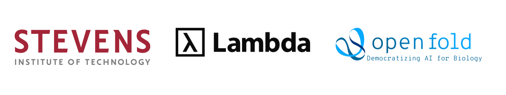

Project lead · with Lambda and OpenFold · 2026
TurboPairFormer
Hopper GPU kernels for Triangle Attention and the Triangle Multiplicative Update, now used to train OpenFold3's next-generation protein folding model.

Technical details & reproducibility
The backward pass rebuilds each probability tile once and reuses it for dQ, dK, dV and dBias, and ordered partial reductions replace floating-point atomics so results are bitwise reproducible.
- 600/600
- inputs bitwise reproducible
- 28–47%
- lower gradient RMSE with BF16 residual compensation
pip install turbopairformer